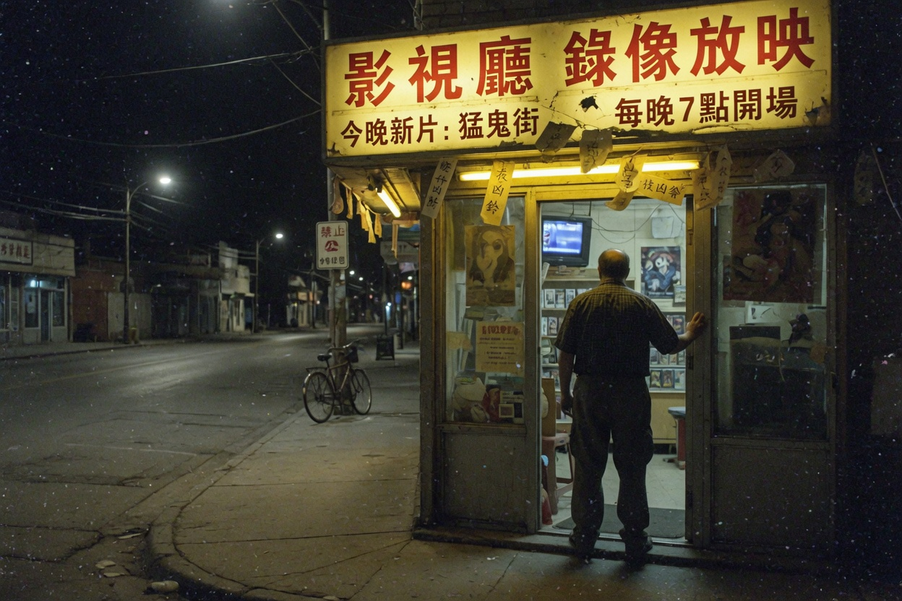

金鹊西路那盏灯

金鹊录像厅老板侯长河，镇上叫他老侯。十一月三日夜场之后，机房的灯没灭。第二天门开着，人没有。
派出所来过。没有血迹，没有出走信。只在放映窗玻璃上留下哈气。哈气里有人说看见他坐在最后一排。最后一排那天没有卖票。
家属不同意火化。厅里不同意撤座。两边僵着。僵的结果是：夜场继续，积分继续，加映继续。继续的人换成了田麦。
老侯不是失踪文案里的大学生。他是把椅子当成香火的店主。椅子要有人。人可以换。
本号后来写过停业说明。说明里有两个字：关站。关的是大厅。网站没关。
阅读 1024 不显示真实公众号商标
地方号写这篇的时候还在用真名。后来改成观察。观察两个字比较安全。安全的文章不会提加映。加映要读者自己从厅里搜出来。搜出来的人已经进门。进门的人不需要被这篇动员。
家属不同意火化，厅里不同意撤座。僵的那些天，金鹊西路晚上特别亮。亮是因为灯没人关。没人关的灯后来变成规矩：灯要等人坐着才肯灭。等人的灯不是照明，是催促。
有人把这篇转去论坛。论坛把标题改成灵异。灵异两个字会引来看热闹的人。看热闹的人坐不住。坐不住的人最不适合加映。加映要坐到完。坐到完是后来田麦教的口令。口令不在这篇里。这篇只负责把老侯两个字变成可搜的人名。